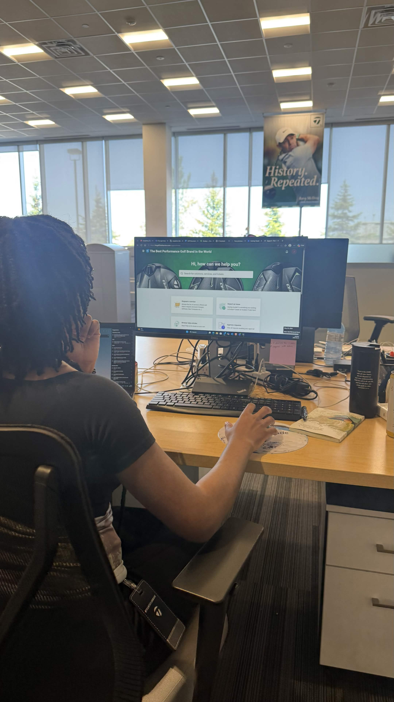
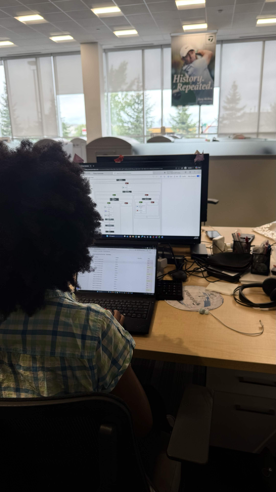
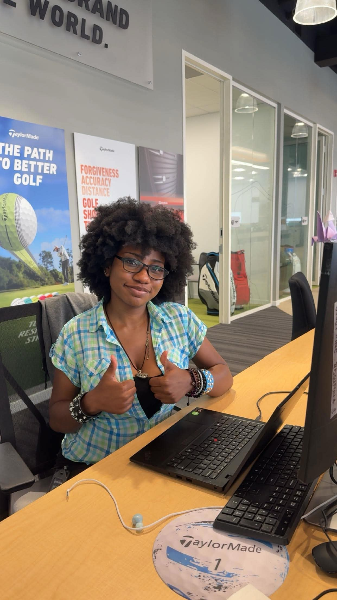

TaylorMade Work Term Report
Work Term Information
- Position: IT Support Intern
- Organization: TaylorMade Golf Canada
- Duration: May 11 - August 28, 2026
- Location: Vaughan, ON


Introduction
From May to August 2026, I worked as the IT Support Intern for TaylorMade Golf Canada, based out of the Vaughan, ON head office. Over four months, my role grew from learning how the Canada IT team supports the business day to day, into helping improve how parts of the business actually operates through asset management, device upgrades, and a business process automation project that became the centerpiece of my term. This report walks through the journey, the results it produced, and what I took away from it.
TaylorMade Golf Canada

TaylorMade got its start in 1979, when Gary Adams took out a loan against his own home to fund a single product: a driver that looked nothing like the wooden clubs golfers were used to. That bet set the tone for everything since. Nearly fifty years later, the company still runs on the same instinct.
TaylorMade is a golf equipment company driven by the instinct to break from convention and push manufacturing further, and it has built a roster to match; its Tour staff includes Tiger Woods, Rory McIlroy, Scottie Scheffler, Nelly Korda, and other top names in the sport, backed by a network of thousands of PGA Professionals working with golfers at the local level. I was based at the Canada head office in Vaughan, Ontario, supporting the Canada IT team on the operational side of that business, working alongside Alex Muriuki, Senior IT Analyst, on day-to-day support, asset management, and process improvement.
Goals
Coming in, my main goal was to understand how a large-scale IT operation actually supports a business. As I got exposed to the problems the team was dealing with, that goal sharpened into something tied directly to my job tasks. I wanted to walk away having actually built something that automated a real manual process end-to-end, not just documented one.

The main skill I wanted to develop was workflow automation, and Power Automate specifically was the technology I set my sights on; it was already the tool TaylorMade's Microsoft ecosystem supported, and I had zero prior experience with it, which made it the clearest stretch goal available to me. I also wanted to get better at translating a years-old business process into something structured enough to automate, since that kind of process literacy is something coursework doesn't cover. I expect both to pay off directly in future roles, whether in IT, product, or software development: knowing how to question "why is this still manual?" and then actually build the fix is a transferable skill.
My goals evolved in four phases as my understanding of the business deepened:
May | Learning
Shadowed tickets and got familiar with how IT operates at TaylorMade and how it supports teams across the business.
June | Execution
Moved into asset audits, inventory validation, and process documentation.
July | Scaling
Wrote SOPs and improved documentation meant to outlive my internship, and started exploring automation opportunities.
August | Delivering
Focused on larger initiatives: workflow automation, process optimization, and handoff preparation.
Looking back, I completed the goals that mattered most to me: I learned Power Automate from scratch and used it to build a framework now running across 9 business processes, and I came away with a much better sense of how to read and improve a real, messy business process rather than just an idealized one from a textbook. The one goal I didn't fully close out was getting the AI-powered self-service assistant into production. I had scoped and prototyped it, but taking it live wasn't realistic within a four-month term since it depends on broader infrastructure decisions the US team is still evaluating. I see that less as an incomplete goal and more as one that's now positioned for someone (possibly future-me) to pick up next.
Job Description

As the IT Support Intern, I split my time between day-to-day Canada IT operations and a set of standalone projects:
- Day-to-day support: Supported 200+ of ~400 Canada IT tickets and 100+ direct user support interactions alongside Alex
- Asset audit: Reviewed and validated 120+ hardware/software assets, correcting untracked devices and ownership inconsistencies
- Windows 11 upgrades: Upgraded and validated 30+ devices, documenting the process for future upgrade cycles
- Process automation (most interesting part of the role): Built a Power Automate framework automating approval workflows — Price Changes, Financial Credits, Payment Terms, Return for Credit, and more — across 9 business processes. Requests now process, notify, and track status automatically, cutting manual follow-up on ~180 requests/year. I had no prior automation experience going in, so I learned Power Automate on the job to build this
- Self-service prototype: Scoped and prototyped an AI-powered assistant to surface SOPs and knowledge base articles conversationally, and shared the concept with the US team, who are exploring similar production opportunities
Conclusions

Looking back on these four months, I'm proud of the projects, the improvements, and the results — the ticket support, the asset audit, the Windows 11 upgrades, and especially the automation framework that will keep saving time long after my internship ends. What I'm most proud of isn't really the volume of work completed; it's that many of these improvements continue creating value after the work itself is finished. The biggest lesson I'm carrying forward is that the best solutions come from understanding the people, the process, and the business objective before jumping into the technology — not the other way around.
But what I'll remember most from this term are the people. The support, mentorship, patience, and humour made this experience not only valuable professionally, but genuinely enjoyable personally.
Acknowledgments
I'd like to thank Alex Muriuki and the rest of the Canada IT team, along with everyone I had the opportunity to work with throughout my internship, for their guidance, patience, and trust throughout this term. Truly a pleasure to work with you all.